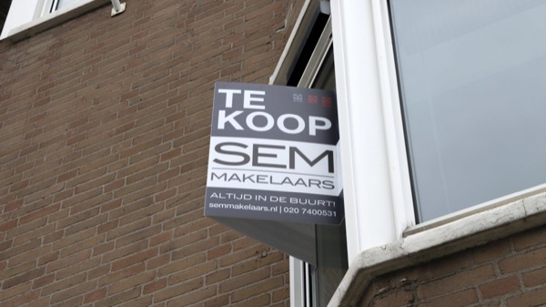
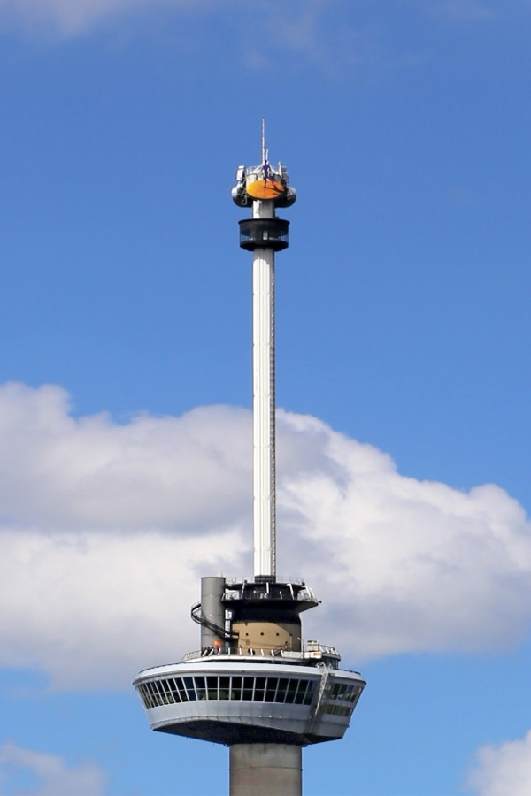
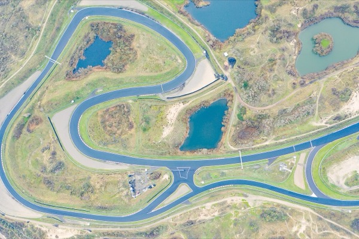
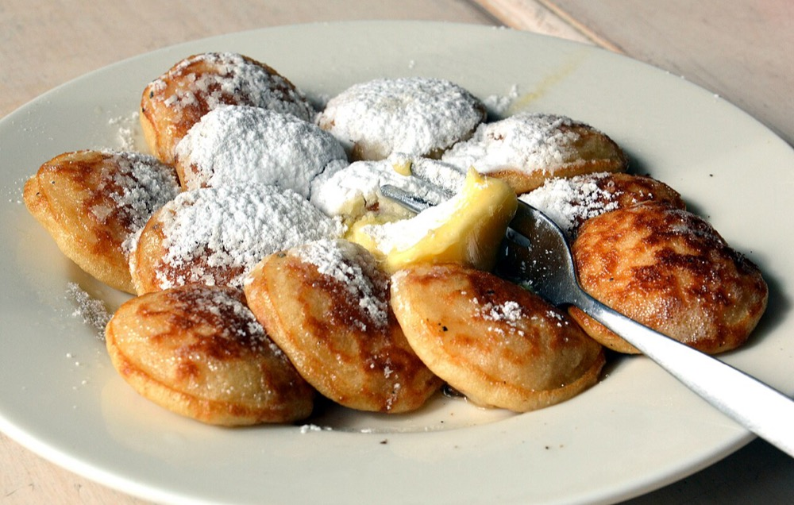
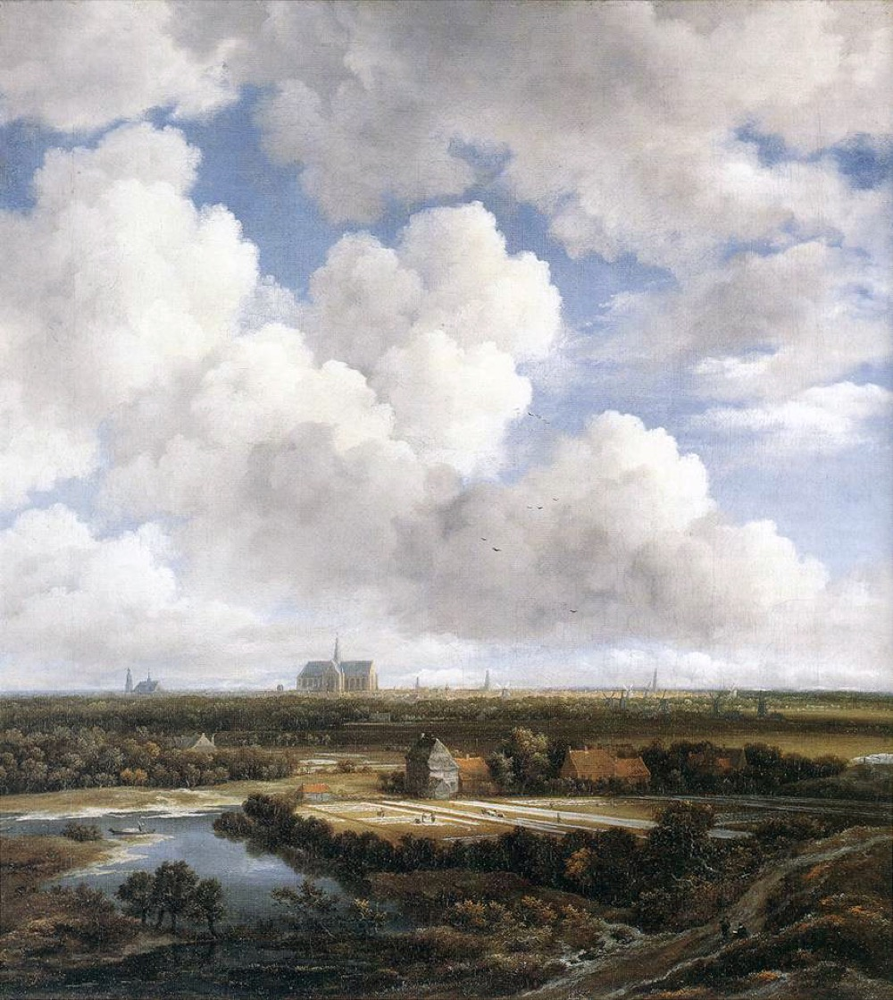
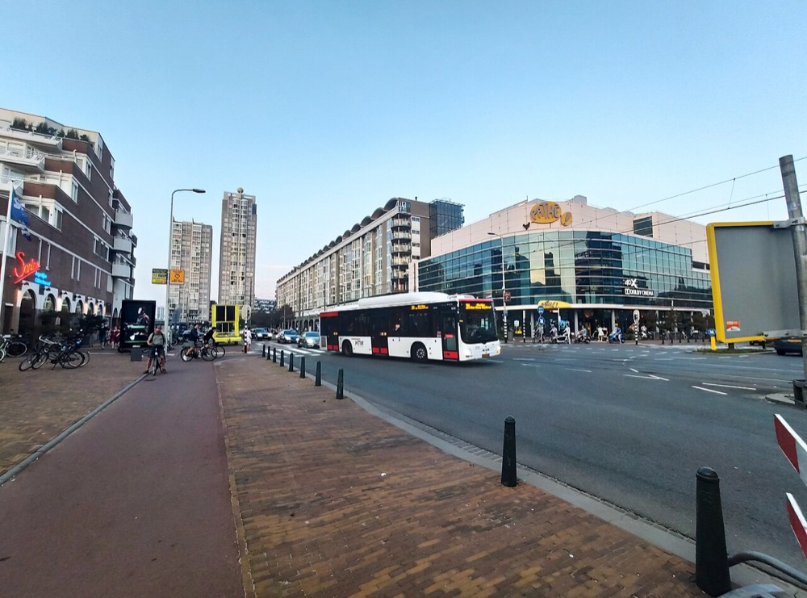
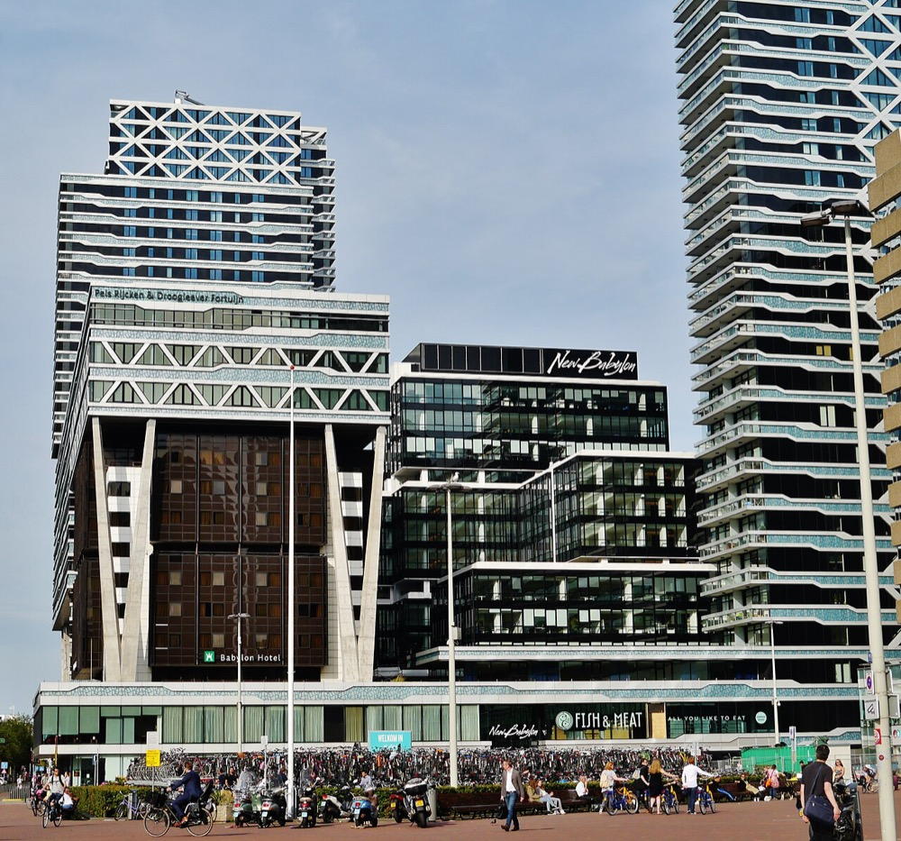
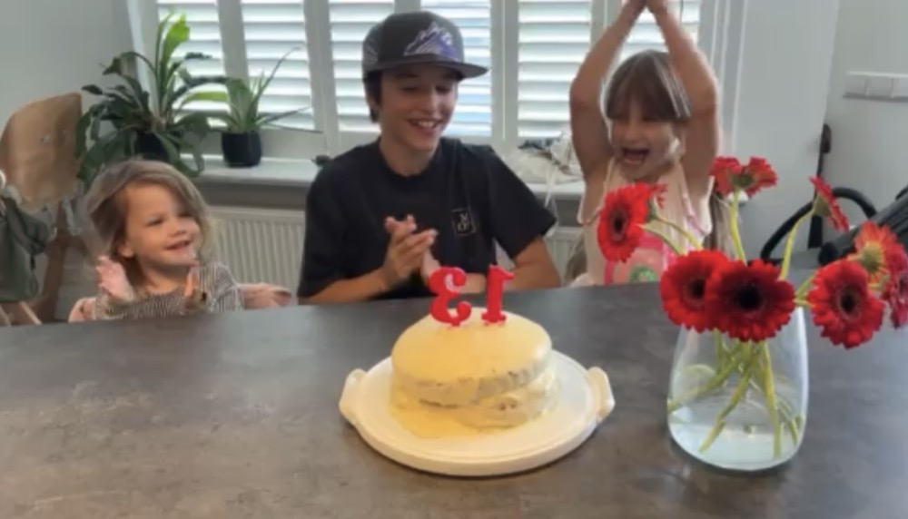
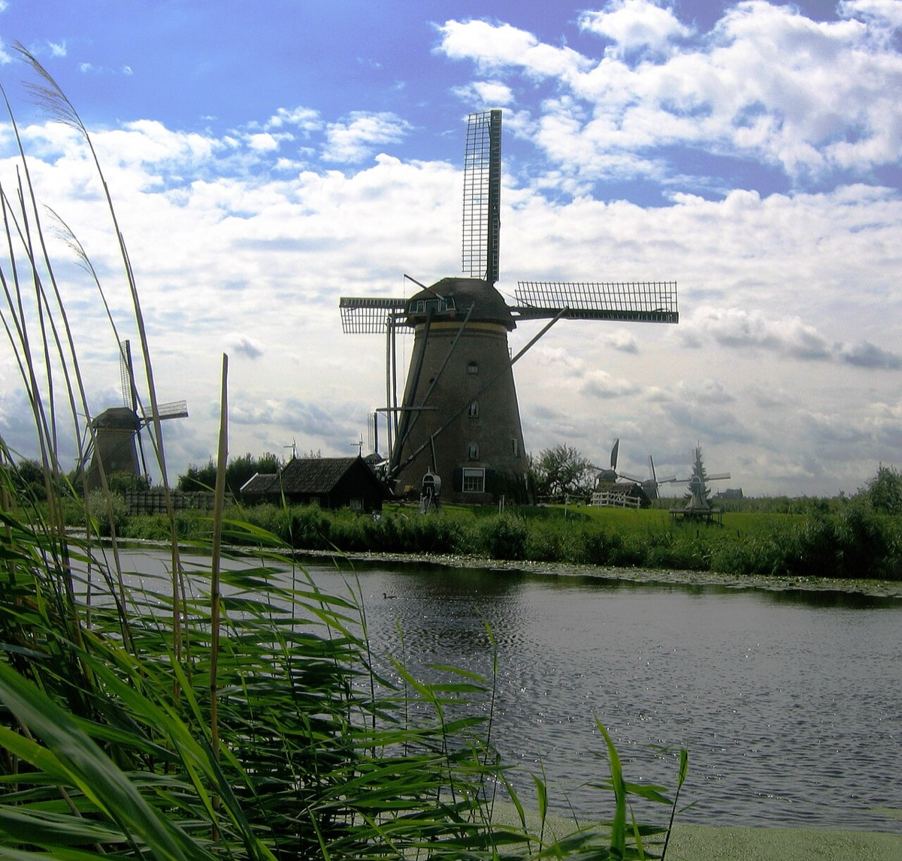

A letter from Tulp de Gid 🌷
Lieve Geltovas, this is the week the whole country puts on its walking shoes. Down in Nijmegen tens of thousands of people are setting off to walk for four days straight, and up and down the land the summer is in full, lazy swing. It is a fine week for you especially, my dears, because some of you are already here: Jan and Bill are still in the Hague, out walking its neighbourhoods and weighing them up, one against another. So this letter has a little more of home in it than usual. There are small pancakes, an enormous painted sky, a corner of the city with a train station at its feet, and a birthday cake with a very cheerful number on top. Pour yourself something cool and come and sit with me.
 The big story
The big story
The whole country goes for a walk
Every year in the third week of July, one Dutch city loses its head in the most wonderful way, and this week it is Nijmegen's turn, down in the east near the German border. The Vierdaagse, the Four Days Marches, has just set off for the 108th time. Picture it: around forty-seven thousand people, from seventy-seven countries, who have each chosen to walk thirty, forty, or fifty kilometres a day, four days running, for no prize at all but the doing of it. The first of them stepped off in the dark at 04:00. The oldest walker this year is ninety-two. The youngest is eleven.
It is not really a race, my dears. It is a great slow festival on foot. The villages around Nijmegen throw open their doors, bands play in the fields, and on the final day the last stretch of road is renamed the Via Gladiola and lined with crowds who press bunches of gladioli into the arms of the finishers, blistered and beaming, until they look as though they are carrying the whole summer home. This is a country that will cheerfully suffer for four days just to be part of something together, and then hand you flowers for it. You will understand the Dutch a little better once you have stood on that street.
 A few quick things, told quickly
A few quick things, told quickly
A crack of light in the housing market
A small thing to cheer anyone about to go looking for a home. A record 56,700 houses came onto the market between April and June, the most of any quarter since 1995, as landlords sell up and put their rentals on the block. All those extra listings are finally slowing the mad climb in prices, though I will not pretend it is cheap: the average sale still ran to about 506,000 euros. Still, a buyer stepping in over the next year may meet a fraction less of a scramble than folk did a year ago.

The prime minister keeps his feet on the ground
A very Dutch little tale. Our prime minister, Rob Jetten, was due to abseil down the Euromast, the 100-metre tower that watches over Rotterdam, on a rope, for charity. At the last moment he thought better of it and pulled out, and even that made the national news. I tell you this only so you understand the scale of the place: the head of government was expected to dangle off a tower for a good cause, and the whole country had an opinion about it. Jan, I rather suspect, would have complimented him warmly on his very wise decision to step back from a terrifying abseil, being no great friend of heights herself. Quite right, prime minister. Politics here is refreshingly short on grandeur.

Last laps by the sea
One for the diary, or perhaps for the bucket list. The Dutch Grand Prix, the Formula 1 race run right in the coastal dunes at Zandvoort, where a hundred thousand fans turn the beach a roaring orange, has confirmed it will see out its final years there rather than move inland to Assen. So the great orange party by the sea is winding down. And it stirs a memory, does it not, for your own family, of the years you would all go to watch the Grand Prix roar through the streets of Detroit when the boys were small. If any of you fancies standing in that noise and that colour just once more, only closer to home, the window is quietly closing.
Dish of the week
Poffertjes, the little pancakes of a Dutch summer
Since the whole country is out of doors and in a festival mood this month, the dish has to match, so this week it is poffertjes. They are tiny pancakes, no bigger than a coin, cooked in a special cast-iron pan full of little dimples until they puff up into soft, airy pillows. The secret is a spoonful of yeast in the batter, which is what makes them rise so light. They come to you in a steaming heap, a knob of butter melting on top and a proper snowfall of powdered sugar over everything, and you eat them with a little fork, far too fast.
You will meet them where the summer is: at a poffertjeskraam, a poffertjes stall, at the funfair, the market, or any fairground, and at cheerful old sit-down poffertjes houses too. They are the happiest of foods and, I promise you, Amellia will be a devoted fan within one bite. Make a batch at home on a grey day and you will bring a little of a Dutch summer indoors with you.
Artwork of the week
The painting that is nearly all sky
Jacob van Ruisdael loved to paint the city of Haarlem from the dunes just outside it, and he did it so often that these particular views earned their own fond little nickname, the "Haarlempjes." Stand in front of one and the first thing that strikes you is the daring of it: the sky swallows up two-thirds of the whole picture, a great slow architecture of cloud, while the land is pressed down into a thin ribbon along the bottom with the tower of Saint Bavo's church standing far off on the horizon. It is a portrait of the Dutch sky as much as of the town beneath it.
Now look at the pale patches scattered across the fields in the foreground. That is linen, laid out on the grass to bleach white in the sun, for Haarlem grew rich on the bleaching of cloth, and Ruisdael lets the sunlight travel over it in bright patches as the clouds move across. Here is the part I love best for you: this very painting hangs in the Mauritshuis, right there in The Hague, a short walk from where you will be living. One quiet afternoon you can go and stand in front of the real thing.
🌷 Tulp's Dutch Calendar Radar
No feast day, just the sky
And speaking of that enormous sky, Ruisdael painted it three hundred years ago and we still cannot stop talking about it, only these days we call it the weather. There is no great holiday to mark right now, so let me tell you what the sky has been up to, because it has handed us the whole year in a single fortnight. First a fierce heat came through, the sort we now take very seriously, and the whole country was gasping. Then it swung clean the other way, cool and blustery, with even a freak touch of ground frost in the east, unheard of in July, and there it has settled, into brisk, breezy days where Jan, I am told, is very glad indeed of her light jacket in the cool of the mornings and evenings. Spare a thought meanwhile for poor Matt, baking away over in Portland where it has been near a hundred degrees and climbing there again today. One family, two summers, a whole ocean between them.
 The Hague & Scheveningen dispatch
The Hague & Scheveningen dispatch
A bit of genuinely exciting news from your own boulevard this week. The Palace Promenade, the big indoor shopping arcade that runs along the Scheveningen seafront toward the Pier, is about to be reborn. It had grown tired and half-empty over the years, but a developer with real ambition, the very same one who owns the Pier itself, has bought it and announced a full renovation, promising to bring its old grandeur roaring back in a handsome classical style, with new shops, cafes, restaurants, and even a few smart apartments woven in. And this is no corner standing still: the whole seafront around it has been visibly improving, year on year, and this is the next big step.
And the potential of it is the best part. There is even talk, though nothing is settled yet, that the made-over arcade might finally gain a proper supermarket inside it, which for anyone living close by would be a real daily prize. Treat that as hopeful speculation rather than a promise for now. But the direction of travel is unmistakable, my dears: the boulevard the family already calls home is on the up, fast, and a couple of years of scaffolding should leave behind something genuinely worth having right on the doorstep. More about the Palace Promenade plans →
The real estate corner
Turfmarkt, where the trains live
One of the neighbourhoods Jan and Bill went to see while they were here was Turfmarkt, the run of tall glass towers along the side of Den Haag Centraal, the city's main railway station, and it is worth a closer look, because it makes a genuinely interesting place to land. The Dutch call this cluster kleine Manhattan, little Manhattan, and it is the one properly vertical corner of an otherwise low and old city: the great ministry towers, the New Babylon complex with its shops and hotel and two apartment towers, and a slim tower nearby that everyone calls Het Strijkijzer, "the flat iron," for its shape. To live here would mean a modern flat up in the light, a supermarket in the building below, and the whole historic centre, the Binnenhof and the market square, a flat ten-minute walk away.
The appeal is simple and practical: the trains. With Den Haag Centraal right at its feet, the whole map opens up, and mostly without changing once.
So the whole of Europe is within easy reach without ever owning a car: a guest flying into Schiphol can be at the door inside the hour, and a day out in Amsterdam, Delft or down at the coast is just a matter of turning up at the platform. For two people who mean to welcome a steady stream of visitors and to wander the continent themselves, that last part is really the whole game.
And this is a corner very much on the move. Right beside the station, two new residential towers, the KJ Den Haag towers on the Koningin Julianaplein, have just reached their highest point: close to four hundred apartments between them, a third of those social housing, due to open by the end of this year. The city's longer ambition is bolder still, with thousands more homes planned by 2040 and, one day, a tower called De Laak that would climb to 240 metres, taller than the ministry towers that mark the skyline now. In short, expect cranes for a good while, and a denser, greener, taller quarter at the end of it.
The other corners of the city are quietly shifting too. Behind Scheveningen, Belgisch Park is gaining a handsome new build, Belle Court on the Badhuisweg, some seventy apartments styled after the old 1920s bathhouse architecture and wrapped around a green communal courtyard, due in 2027. And the Zeeheldenkwartier, that lovely nineteenth-century weave of streets, is being gently remade for people over cars, its shopping lanes losing parking and gaining green, even as it becomes one of the pricier central places to buy. Wherever the family eventually lands, the ground beneath these neighbourhoods is shifting in interesting ways, and mostly for the better.
"Wat een gezellige buurt!" (What a lovely, cosy neighbourhood!)
"We wonen in een rustige buurt." (We live in a quiet neighbourhood.)
"Is het een fijne buurt om te wonen?" (Is it a nice neighbourhood to live in?)
"Hij komt hier uit de buurt." (He is from around here.)
On the family calendarAnd a glance, before I let you go, at what this little family of ours is up to, and what is coming next.

Ilin turned thirteen, and here is the proof: the birthday boy in the middle behind his cake, small Amellia clapping on the left, and Ena cheering him on with both arms in the air. A brand new teenager in the family. Look how pleased everyone is about it.
🌷 Tulp's question for the table
Pros and cons of the neighbourhoods you have been able to visit.
That is the letter, my dears. A great long walk, a plate of little pancakes, an enormous painted sky, and a corner of the city with the trains running underneath it, which is really all one letter about the same happy question you will soon be answering together: where, exactly, do we want to be. Some of you are standing in the answer already.
Enjoy one another on your call this week, and Jan and Bill, safe travels home when the time comes. You are leaving a little of yourselves behind here, which is rather the point.
Tot de volgende keer, which is what we say for "until next time," and go and put your feet up. You have walked a long way this week, one way or another.
Liefs, Tulp 🌷Tulp's parting shot
And here is where I will leave you: the old windmills of Kinderdijk, standing in their long row along the water on a bright summer's day. This is the whole country in one picture, flat and green and threaded with water, under that great wide sky the Dutch have been painting, and grumbling about, for four hundred years. Come and stand in it. We are keeping it warm for you.